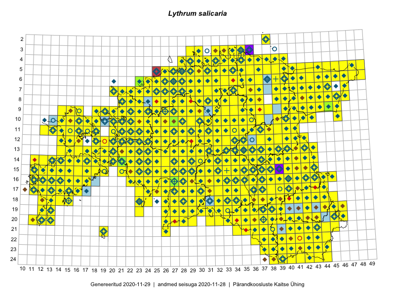

Lythrum salicaria
Uuendatud: 2016-12-01
Kaardile koondatud taksonid: Lythrum salicaria L.

Kaart põhineb 749 kirjel.
Kuvatud viited 20 esimesele andmebaasikirjele, ülejäänud PlutoFis
- Malle Leht: 2015-07-09: : ala
- Thea Kull: 2015-07-07: 16-40: ala
- Malle Leht: 2015-08-02: : ala
- Peedu Saar, Toomas Kukk: 2015-05-27: 09-14: ala
- Peedu Saar, Toomas Kukk: 2015-05-27: 09-16: ala
- Toomas Kukk, Eerik Leibak: 2015-08-09: 14-15: ala
- Toomas Kukk, Peedu Saar: 2015-08-05: 20-11: ala
- Toomas Kukk, Eerik Leibak: 2015-08-12: 10-17: ala
- Toomas Kukk, Eerik Leibak: 2015-08-10: 09-14: ala
- Toomas Kukk, Eerik Leibak: 2015-08-10: 13-14: ala
- Toomas Kukk, Eerik Leibak: 2015-08-10: 13-15: ala
- Toomas Kukk, Peedu Saar: 2014-09-25: 07-42: ala
- Toomas Kukk, Peedu Saar: 2014-09-12: 07-42: ala
- Toomas Kukk, Peedu Saar: 2014-09-23: 06-42: ala
- Toomas Kukk, Peedu Saar: 2014-09-24: 06-40: ala
- Rein Kalamees, Kersti Püssa: 2015-09-06: 03-32: ala
- Rein Kalamees, Kersti Püssa: 2015-08-04: 03-33: ala
- Tiit Hallikma, Toomas Kukk: 2015-07-21: 05-45: ala
- Ott Luuk: 2014-07-27: 12-20: GPS punkt
- Ott Luuk: 2014-07-24: 12-20: ala